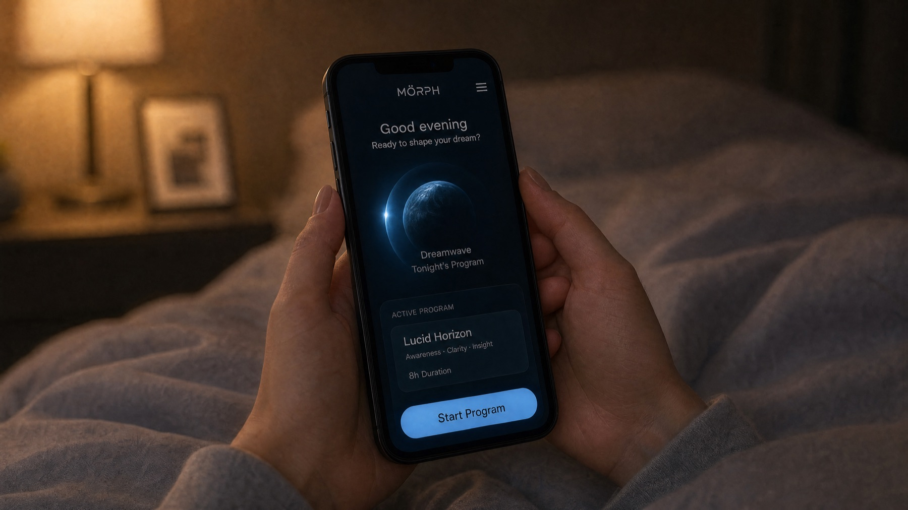
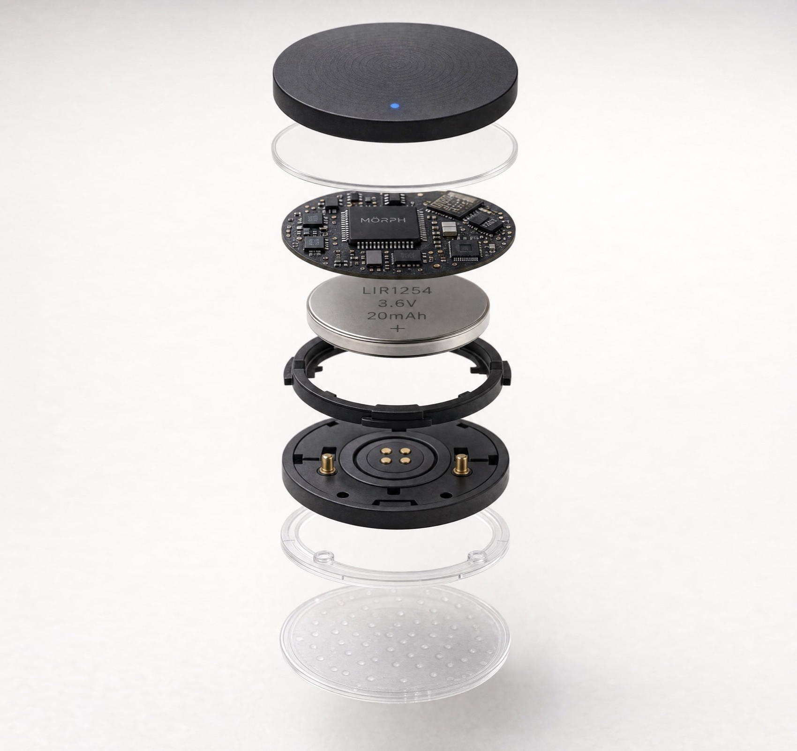
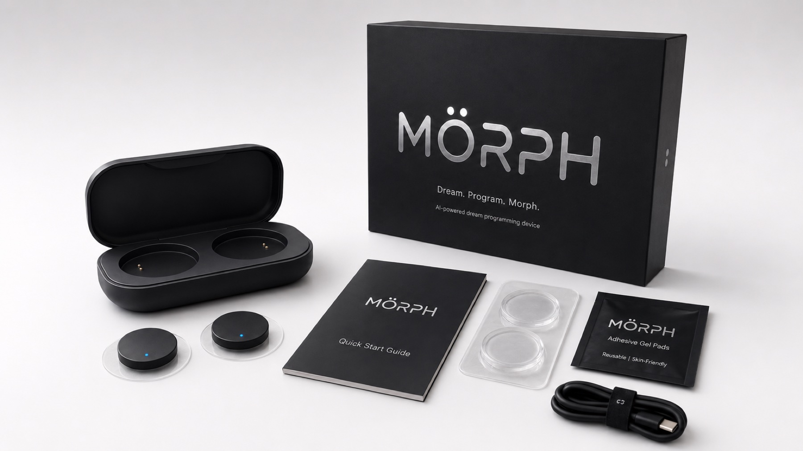

Set the vibe
Describe the dream you want in plain language. MÖRPH turns your intent into a dream program.
[ DREAM OS / LOCAL LOOP ]
MÖRPH reads the edge of sleep, keeps the AI on-device, and nudges the dream back toward the intent you set before bed.
[ 01 / SET THE VIBE ]
"Flying over an endless ocean at sunset."
no screens · no wake audio · hypnagogic seed only
lucid horizon / 8h program / chaos disabled

[ 02 / CLOSED LOOP ]
Describe the dream you want in plain language. MÖRPH turns your intent into a dream program.
MÖRPH detects the hypnagogic window and seeds the theme with gentle sensory cues.
On-device AI reconstructs an approximation of what you are dreaming in real time.
When the dream drifts off-script, the device nudges it back toward your intent.
Wake up to a visual replay. Save highlights, reload a dream, or remix it with chaos mode.
[ 03 / DEVICE STACK ]

[ 04 / PRIVATE BY DESIGN ]
A low-power neural co-processor classifies sleep stage in real time and runs the dream-shaping engine locally.

[ 05 / SAVE & REPLAY ]
Save highlights, reload a dream tomorrow, or let the AI remix the night into something stranger with chaos mode.
[ MÖRPH / NIGHTLY BUILD ]
[ COLOPHON ]
MÖRPH is a speculative concept. Closed-loop dream synthesis does not yet exist — but every piece points to where it could.